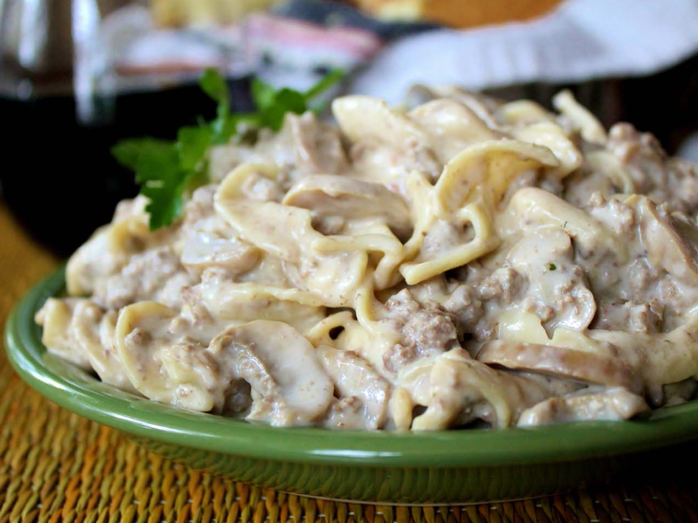

HamburgerStroganoff

Description
This hamburger stroganoff recipe with egg noodles is so quick and easy to make. Everyone loves it!
Ingredients
- 1 (16 ounce) package egg noodles
- 2 tablespoons butter
- 1 onion, chopped
- 1 pound ground beef
- 1 tablespoon all-purpose flour
- 1 (4.5 ounce) can sliced mushrooms, drained (Optional)
- 1 tablespoon garlic salt
- 1 (10.5 ounce) can cream of mushroom soup (such as Campbell's®)
- 1 (10.5 ounce) can cream of chicken soup (such as Campbell's®)
- 1 cup sour cream
Steps
- Fill a large pot with lightly salted water and bring to a rapid boil. Cook egg noodles at a boil until tender yet firm to the bite, 7 to 9 minutes; drain.
- Meanwhile, melt butter in a large skillet over medium-high heat. Sauté onion in hot butter until tender and translucent, about 5 minutes. Add ground beef in small chunks; cook and stir beef until browned and crumbly, 5 to 7 minutes.
- Sprinkle flour over beef mixture; cook and stir for 1 minute. Stir in mushrooms and garlic salt. Pour in mushroom soup and chicken soup; cook and stir until heated through, about 5 minutes. Stir in sour cream until smooth and heated through, 2 to 3 minutes more. Serve beef mixture over cooked egg noodles.